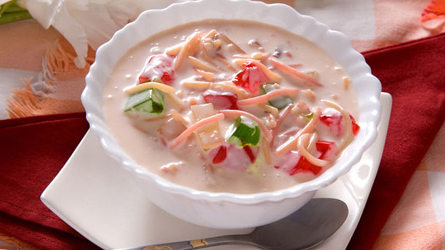

Lab e Shireen

Lab-e-shireen is a classic Arabian cuisine and Eid dessert in Pakistan. This is rich flavored custard with vermicelli ,fresh fruits,dried fruits, fresh cream, and jelly. It tastes best when its nicely chill. Make and keep it in fridge for 1 day before serving ,this way it will taste perfect.
INGREDIENTS
- Mix Fruit 1-1cup
- Green Jelly 1 cup
- Red Jelly 1 cup
- Cream 1 cup
- Milk 300ml
- Sugar 1/2 cup
- Custard Powder 2 tbsp
- Almond (chopped) 1/4 cup
- Red Syrup 2 tbsp
- Vermicelli (boiled)
STEPS
- First, prepare the custard.
- Mix the custard powder separately in a small bowl with about 2 tbsp. of milk.
- Pour the remainder of the 300ml in a pan with the sugar and a few drops of red narus (to turn the custard pink) and bring it to almost boiling point then lower the heat.
- Add the custard mixture and keep stirring until the mixture thickens (for about 2-3 minutes) then turn off the heat.
- Set the custard aside to cool.,add the liquid cream and naurus sherbat and mix well.
- Then add the drained fruit cocktail, crushed nuts and boiled vermicelli. garnish with jelly.
- Chil in refrigerate and chill to serving.